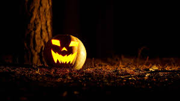
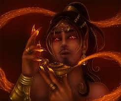

On Halloween, the ordinary rules of the night loosen: streets glow with jack-o’-lanterns, shadows lengthen, and people step out in masks to play at being other than themselves. This liminality—the sense that the barrier between worlds thins—echoes the folklore of the jinn, spirits from Arabic and Islamic tradition who inhabit a world parallel to ours. Like Halloween’s trick-or-treaters, jinn are neither wholly good nor wholly evil; they are unpredictable, capable of mischief, help, or harm, and they thrive in the cracks and corners we often ignore.
The overlap between jinn lore and Halloween is natural. Both invite masquerade and bargaining: costumes hide identity and invite transformation, while stories of jinn warn that careless wishes or disrespectful curiosity can have consequences. Lanterns, bonfires, and rituals meant to ward off or welcome spirits on All Hallows’ Eve mirror older practices—offering light, noise, or food to placate unseen presences—that appear in cultures where jinn stories are lived experience. In short, Halloween’s playful negotiation with fear gives the jinn a cultural space to appear, whether as a scary tale told around a fire or as a theme for a hauntingly beautiful costume.
Today that connection shows up in modern storytelling and celebration: jinn appear in horror films, in speculative fiction, and on costume runways where their images are reimagined as glamorous, eerie, or urban. That blending is rich but also calls for care—jinn are part of religious and cultural traditions for many people, so drawing on them for Halloween works best when done with curiosity and respect rather than caricature. When handled thoughtfully, the meeting of Halloween and jinn lore becomes more than a spooky aesthetic; it’s a way to keep old stories alive, to explore ideas about otherness and consequence, and to remind us that some mysteries are best approached with both wonder and caution.
Halloween is a time when candy takes center stage, turning trick-or-treating into a sweet adventure. From chocolate bars to colorful gummies, these sugary treats symbolize the fun and excitement of the holiday. Whether shared with friends or saved for later, Halloween candy adds a burst of joy to spooky nights and makes the celebration unforgettable.